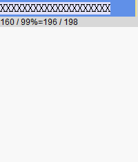
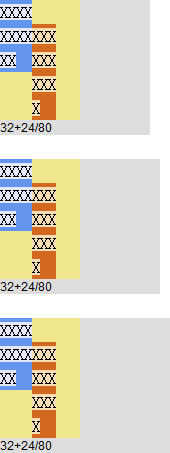

RX8017: IE 对浮动非替换元素内包含宽度单位为百分比的元素时的 'shrink-to-fit' 宽度算法有误
标准参考
根据 CSS2.1 规范中的描述，在对以 "百分比" 为单位的 'width' 特性值的计算时，"百分比" 的计算基于生成框的包含块的宽度。若其包含块的宽度依赖其自身宽度，则由此产生的布局在 CSS2.1 中没有定义。
而对于浮动非替换元素，当浮动元素的 'width' 特性为 "auto" 时，浮动非替换元素宽度计算要遵循 "shrink-to-fit" 算法。下面详细介绍 "shrink-to-fit" 算法的细节：
- "shrink-to-fit" 的宽度计算方法与 'table-layout' 特性为 'auto'（即自动表格布局）时对于单元格的宽度计算方法类似。大致为：
- 计算格式化内容时除了发生明确的换行外不发生换行的时首选宽度（preferred width），以及首选最小宽度（preferred minimum width），比如，尝试所有可能的换行。而 CSS2.1 没有定义精确的算法。
- 其次，在这种情况下，找出可用宽度（available width），这个宽度为包含块减去 'margin-left'、'border-left-width'、'padding-left'、 'padding-right'、'border-right-width'、'margin-right' 以及所有相关滚动条的宽度。
- 然后得到公式： "shrink-to-fit" 的宽度 = min ( max ( 首选最小宽度, 可用宽度 ) , 首选宽度 )
关于 'width' 特性及 "shrink-to-fit" 的详细信息，请参考 CSS2.1 规范 10.2 Content width: the 'width' property 及 10.3.5 Floating, non-replaced elements 中的内容。
问题描述
CSS2.1 规范中并没有明确说明对于应用 "shrink-to-fit" 算法计算宽度的元素内包含 'width' 特性单位为 "百分比" 的元素时究竟应该如何计算父子元素的宽度。但 IE 在此类情况下，对于宽度的计算与规范中明确说明的规定有明显出入，导致计算的宽度与其他浏览器有很大的差异。且与文档模式有关。
造成的影响
对 "shrink-to-fit" 算法差别可能导致不同浏览器之间浮动元素的宽度有很大的差异，影响到页面布局。
受影响的浏览器
| IE6(Q) IE7(Q) IE8(Q) | |
|---|---|
| IE6(S) | |
| IE7(S) | |
| IE8(A) |
问题分析
本文中所阐述的问题比较复杂，所以先将问题分为三类：
- 子元素的宽度之和小于其包含块的宽度
- 子元素的宽度之和等于其包含块的宽度
- 子元素的宽度之和大于其包含块的宽度
分析以下代码：all.html
<!DOCTYPE html>
<html>
<head>
<meta http-equiv="Content-Type" content="text/html; charset=utf-8" />
<script>
window.onload = function () {
function $(id) { return document.getElementById(id); }
$("info1").innerHTML = $("sub11").offsetWidth + "+" + $("sub12").offsetWidth + "/" + $("cont1").offsetWidth;
$("info2").innerHTML = $("sub21").offsetWidth + "+" + $("sub22").offsetWidth + "/" + $("cont2").offsetWidth;
$("info3").innerHTML = $("sub31").offsetWidth + "+" + $("sub32").offsetWidth + "/" + $("cont3").offsetWidth;
}
</script>
</head>
<body style="font:16px/1.5 宋体; margin:0;">
<div style="width:200px; background:#ddd; overflow:hidden;">
<div id="cont1" style="float:left; background:khaki; word-wrap:break-word; word-break:break-all;">
<span id="sub11" style="width:40%; background:cornflowerblue; display:inline-block;">
<span style="background:lavender;">XXXXXXXXXX</span>
</span><span id="sub12" style="width:30%; background:chocolate; display:inline-block;">
<span style="background:wheat;">XXXXXXXXXX</span>
</span>
</div>
<div id="info1" style="font:12px Arial; clear:both;"></div>
</div>
<br />
<div style="width:200px; background:#ddd; overflow:hidden;">
<div id="cont2" style="float:left; background:khaki; word-wrap:break-word; word-break:break-all;">
<span id="sub21" style="width:40%; background:cornflowerblue; display:inline-block;">
<span style="background:lavender;">XXXXXXXXXX</span>
</span><span id="sub22" style="width:60%; background:chocolate; display:inline-block;">
<span style="background:wheat;">XXXXXXXXXX</span>
</span>
</div>
<div id="info2" style="font:12px Arial; clear:both;"></div>
</div>
<br />
<div style="width:200px; background:#ddd; overflow:hidden;">
<div id="cont3" style="float:left; background:khaki; word-wrap:break-word; word-break:break-all;">
<span id="sub31" style="width:80%; background:cornflowerblue; display:inline-block;">
<span style="background:lavender;">XXXXXXXXXX</span>
</span><span id="sub32" style="width:90%; background:chocolate; display:inline-block;">
<span style="background:wheat;">XXXXXXXXXX</span>
</span>
</div>
<div id="info3" style="font:12px Arial; clear:both;"></div>
</div>
</body>
</html>
上面三组代码中，均存在一个未设置 'width' 特性的浮动非替换元素，则其宽度计算遵照 "shrink-to-fit" 算法，通过为其设置 word-wrap:break-word; word-break:break-all; 使其子元素可以按照单独字母折行。浮动元素的包含块宽度为 200px，其内均包含了两个宽度单位为 "百分比" 的行内块元素。
行内块元素的宽度之和分别 小于、等于、大于 浮动元素的宽度。
这段代码在不同浏览器中运行结果如下：
| IE6(Q) IE7(Q) IE8(Q) | IE6(S) | IE7(S) | IE8(S) Firefox Chrome Safari Opera |
|---|---|---|---|
 |
 |
 |
 |
上面这段代码在 IE6 IE7 IE8(Q) 中出现了与其他浏览器不同的效果。首先看 IE8(S) Firefox Chrome Safari Opera 中的算法：
浮动元素的宽度计算使用 "shrink-to-fit" 算法，"shrink-to-fit" 需要参照子元素的宽度，而此例中子元素的宽度单位为百分比，即子元素的宽度需要参照其包含块。所以这里出现了包含块与其子元素宽度计算相互制约、相互依赖的现象。
在 IE8(S) Firefox Chrome Safari Opera 中，浏览器首先忽略子元素的百分比宽度，假设它们的宽度为默认的 'auto'，在此基础上计算 首选最小宽度、可用宽度、首选宽度 这三个 "shrink-to-fit" 算法依赖的三个宽度数据：
- 首选最小宽度：由于子元素可以按照单独字母折行，这里的首选最小宽度即为一个 16px 宋体英文字符的宽度——8px。
- 可用宽度：浮动元素的包含块的可用宽度为 200px。
- 首选宽度：子元素没有明确的换行，则首选宽度为 20 个 16px 宋体英文字符的宽度，即 160px。
根据 "shrink-to-fit" 的计算公式得到此时的 "shrink-to-fit" 宽度为 min ( max ( 8, 200 ), 160 ) = 160px。
则浮动元素的计算后宽度为 160px。这时浮动元素的各百分比宽度的子元素在根据其 'width' 特性所设定的百分比例计算出最终宽度。如：
对于第一组，两个 display:inline-block 的元素的宽度设定分别为 40% 与 30%。那么它们的计算后宽度则分别为 160px * 40% = 64px 与 160px * 30% = 48px。
对于子元素宽度之和 小于、等于、大于 浮动元素的宽度时，计算方法均相同。
下面分别探讨所有版本的 IE(Q)，以及 IE6(S)、IE7(S) 中这种情况下浮动元素及其子元素的宽度计算方式：
- 在 IE6(Q) IE7(Q) IE8(Q) 中，仍然是无法确定浮动元素的 "shrink-to-fit" 宽度，此时浏览器浏览器直接将子元素的百分比宽度之和作为浮动元素的 "shrink-to-fit" 宽度，以此确定了浮动元素的最终宽度。然后其子元素的宽度也可以确定。
针对第一组，浮动元素子元素的宽度之和为 40% + 30% = 70%，浮动元素的宽度也为 70%，即 200px * 70% = 140px。然后子元素的宽度为 140px * 40% = 56px 及 140px * 30% = 42px。
针对第二组，浮动元素子元素的宽度之和为 40% + 60% = 100%，浮动元素的宽度也为 100%，刚好等于其包含块的宽度，即 200px。然后子元素的宽度为 200px * 40% = 80px 及 200px * 60% = 120px。
针对第三组，浮动元素子元素的宽度值和为 80% + 90% = 170% > 100%，此时包含块的宽度绝对不足以容纳它们，需要换行。此时浮动元素的宽度为最宽的那个元素的设定宽度，即 200px * 90% = 180px。然后子元素的宽度为 180px * 80% = 144px 及 180px * 90% = 162px。 - 在 IE6(S) 中，计算出的浮动元素的宽度与上一条中相同，但是在计算子元素的宽度时并不是将子元素的百分比宽度与浮动元素的计算后的宽度相乘，而是以子元素的宽度之比做分配。如第一组中子元素的宽度之比为 40%:30%，即 4:3，则第一个子元素的宽度为 140px * 4/7 = 80px，第二个子元素的宽度为 140px * 3/7 = 60px。
- 在 IE7(S) 中，在 IE6(S) 的基础上出现了更加过度的收缩现象。
可以通过一组动画更加直观的看到各浏览器在这种情况下计算 "shrink-to-fit" 宽度的差别：ani.html （源代码较长不再贴出，请参见底部的测试页面）
| IE6(Q) IE7(Q) IE8(Q) | IE6(S) | IE7(S) | IE8(S) Firefox Chrome Safari Opera |
|---|---|---|---|
|  |  |
 |
 |
将上例中的 display:inline-block; 换为 float:left|right 结果相同。
下面看另一组例子：f_all.html
【注】下面的例子中所述的文档模式包含：
1. "Standards Mode"，用缩写 S 表示。DOCTYPE: <!DOCTYPE html PUBLIC "-//W3C//DTD XHTML 1.0 Strict//EN" "http://www.w3.org/TR/xhtml1/DTD/xhtml1-strict.dtd">；
2. "Almost Standards Mode"，用缩写 A 表示。DOCTYPE: <!DOCTYPE html PUBLIC "-//W3C//DTD XHTML 1.0 Transitional//EN" "http://www.w3.org/TR/xhtml1/DTD/xhtml1-transitional.dtd">；
3. "Quirks Mode"，用缩写 Q 表示。无 DOCYTPE。
<!DOCTYPE html PUBLIC "-//W3C//DTD XHTML 1.0 Strict//EN" "http://www.w3.org/TR/xhtml1/DTD/xhtml1-strict.dtd">
<html>
<head>
<meta http-equiv="Content-Type" content="text/html; charset=utf-8" />
<script>
window.onload = function () {
function $(id) { return document.getElementById(id); }
$("info1").innerHTML = $("sub11").offsetWidth + "+" + $("sub12").offsetWidth + "/" + $("cont1").offsetWidth;
$("info2").innerHTML = $("sub21").offsetWidth + "+" + $("sub22").offsetWidth + "/" + $("cont2").offsetWidth;
$("info3").innerHTML = $("sub31").offsetWidth + "+" + $("sub32").offsetWidth + "/" + $("cont3").offsetWidth;
}
</script>
</head>
<body style="font:16px/1.5 宋体; margin:0;">
<div style="width:150px; background:#ddd; overflow:hidden;">
<div id="cont1" style="float:left; background:khaki; word-wrap:break-word; word-break:break-all;">
<div id="sub11" style="width:40%; background:cornflowerblue; float:left;">
<span style="background:lavender;">XXXXXXXXXX</span>
</div><br /><div id="sub12" style="width:30%; background:chocolate; float:left;">
<span style="background:wheat;">XXXXXXXXXX</span>
</div>
</div>
<div id="info1" style="font:12px Arial; clear:both;"></div>
</div>
<br />
<div style="width:160px; background:#ddd; overflow:hidden;">
<div id="cont2" style="float:left; background:khaki; word-wrap:break-word; word-break:break-all;">
<div id="sub21" style="width:40%; background:cornflowerblue; float:left;">
<span style="background:lavender;">XXXXXXXXXX</span>
</div><br /><div id="sub22" style="width:30%; background:chocolate; float:left;">
<span style="background:wheat;">XXXXXXXXXX</span>
</div>
</div>
<div id="info2" style="font:12px Arial; clear:both;"></div>
</div>
<br />
<div style="width:170px; background:#ddd; overflow:hidden;">
<div id="cont3" style="float:left; background:khaki; word-wrap:break-word; word-break:break-all;">
<div id="sub31" style="width:40%; background:cornflowerblue; float:left;">
<span style="background:lavender;">XXXXXXXXXX</span>
</div><br /><div id="sub32" style="width:30%; background:chocolate; float:left;">
<span style="background:wheat;">XXXXXXXXXX</span>
</div>
</div>
<div id="info3" style="font:12px Arial; clear:both;"></div>
</div>
</body>
</html>
上述代码和第一段测试代码结构类似，区别仅为浮动元素的子元素 display:inline-block; 换为 float:left;，子元素直接插入了一个换行符 <br />。
这段代码在不同浏览器中运行结果如下：
| IE6(Q) IE7(Q) IE8(Q) | IE6(S) | IE7(S) | IE8(A) | IE8(S) Firefox Chrome Safari Opera |
|---|---|---|---|---|
 |
 |
 |
 |
 |
在本例中，除 IE8(A) 意外的其他浏览器中浮动元素的 "shrink-to-fit" 算法与上例大致相同，但 IE8(A) 中出现了较大的差异。
IE8 在这种情况下 "Almost Standards Mode" 与 "Standards Mode" 出现了较大差异。
IE8(A) 中，当浮动父元素的包含块的宽度小于浮动元素内的子元素的 首选宽度 之和的时候，其宽度计算方法与 IE6(S) 中类似。当浮动父元素的包含块的宽度大于浮动元素内的子元素的 首选宽度 之和的时候，其宽度计算方法与 IE7(S) 中类似。
综合上面所有的测试样例及截图，虽然 CSS2.1 规范没有明确定义当出现这种父子元素直接宽度计算相互依赖时的具体算法，但在 IE8(S) Firefox Chrome Safari Opera 中的处理更符合常理，且计算后的父子元素的宽度值关系也符合作者的设定值以及 CSS2.1 规范。
解决方案
1. 明确为浮动元素设置一个宽度值，避免其在进行 "shrink-to-fit" 计算时在不同浏览器之间出现的宽度计算差异。
2. 若浮动元素出于某些情况必须使用 "shrink-to-fit" 宽度时，则应尽量保证其内子元素的宽度不依赖其自身宽度，如使用 px 为单位的宽度值。
参见
知识库
相关问题
测试环境
| 操作系统版本: | Windows 7 Ultimate build 7600 |
|---|---|
| 浏览器版本: |
IE6 IE7 IE8 Firefox 3.6.3 Chrome 6.0.408.1 dev Safari 4.0.5 Opera 10.53 |
| 测试页面: | all.html ani.html f_all.html |
| 本文更新时间: | 2010-08-13 |
关键字
shrink-to-fit width percent float algorithm 百分比 浮动 宽度